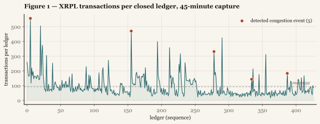
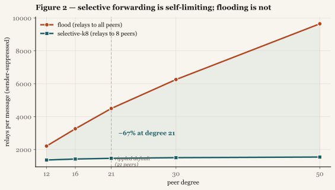

Public blockchain peer-to-peer networks propagate transactions by gossip flooding: each node relays every message to all of its peers. Flooding is robust but bandwidth-expensive, and its cost grows linearly with peer connectivity. We ask whether selective forwarding — relaying each message to a fixed handful of peers rather than all of them — can substantially reduce relay bandwidth on the XRP Ledger (XRPL) without meaningfully degrading message reachability. Using 45 minutes of live XRPL mainnet telemetry (427 closed ledgers, 39,474 transactions) to drive a Monte-Carlo gossip simulation over a 200-node peer graph, we find that forwarding to 8 random peers (selective-k8) reduces simulated relay bandwidth by approximately 67% relative to flooding at the rippled default peer degree of 21, while retaining at least 99.5% reachability in the worst trial and 99.99% on average. The reduction is bracketed: approximately 39% under an aggressive peer-aware duplicate-suppression model, rising to 84% at higher peer degrees. The saving scales from 38% to 84% across peer degrees 12 to 50, with selective forwarding's relay count remaining nearly constant while flooding's grows linearly. We discuss the limits of these results — single short capture, idealized peer graph, simulated rather than instrumented relay behavior — and outline the validation that would convert them into a deployment claim.
1Introduction
The XRP Ledger, like most public blockchain networks, disseminates transactions through a gossip overlay. When a node receives a new transaction it has not seen before, it relays that transaction to its peers, who relay to theirs, until the message has saturated the network. This flooding discipline is simple and resilient: as long as the peer graph is connected, every node eventually receives every message, and the network tolerates node churn and adversarial behavior gracefully.
Flooding's cost is bandwidth. Each node transmits every message to every peer, so the total number of relay events per message scales with the number of nodes times their average peer degree. As a network grows — both in node count and in per-node connectivity — flooding bandwidth grows with it, and much of that bandwidth is spent on redundant transmissions to peers that have already received the message from someone else.
A natural question is whether nodes can forward more parsimoniously. If each node relays a new message to only k of its peers rather than all of them, total relay traffic falls. The risk is that some nodes are never reached — the network fragments, or some transactions fail to propagate. The engineering question is the trade-off: how much bandwidth does selective forwarding save, and how much reachability does it cost?
This paper measures that trade-off for XRPL specifically, using live mainnet transaction telemetry to ground the traffic model and the documented rippled peer-degree default to ground the topology. Our contribution is not a new protocol — selective and probabilistic gossip are well studied in the distributed-systems literature — but a quantified, sourced, reproducible estimate of the trade-off under XRPL's actual operating parameters, reported with its assumption-dependence made explicit rather than hidden behind a single headline number.
2Method
2.1 Telemetry capture
We captured live XRPL ledger telemetry by subscribing to the public ledger stream via WebSocket (wss://xrplcluster.com, with automatic failover to s1.ripple.com and s2.ripple.com). For each closed ledger we recorded the ledger index, the authoritative on-ledger transaction count (txn_count), the ledger close time, and the inter-ledger interval derived from successive close times.
We use each ledger's authoritative txn_count rather than counting transactions pushed over the subscription stream. The latter undercounts, because a public server relays only a subset of transactions to any given subscriber; the closed-ledger header reports the true count. Inter-ledger intervals are derived from on-ledger close times rather than message arrival times, so they reflect consensus cadence rather than network jitter. (XRPL close times are quantized to whole seconds, a point we return to in §2.3.)
The capture spans 45 minutes: 427 closed ledgers, 39,474 transactions, mean 92.4 transactions per ledger, peak 556. Two reconnections occurred during capture as public servers rotated connections; the collector resumed without data loss across the rotation.

2.2 Gossip propagation model
We model the XRPL peer overlay as an undirected random graph of 200 nodes, each connected to approximately d peers. For the headline result we set d = 21, the documented rippled default soft-maximum number of peers; §3.2 sweeps d across a wider range.
For each forwarding policy we run a Monte-Carlo simulation of single-message propagation. A message originates at a uniformly random node and propagates in synchronous rounds: each newly-informed node relays the message to a forwarding set of its peers. We compare flood (relay to all peers) against selective-k (relay to k uniformly-random peers, for k ∈ {6, 8, 10}). We measure two quantities per trial, averaged over 300 trials per policy: reachability, the fraction of nodes that receive the message; and relays per message, the total number of send events, used as the bandwidth proxy. We also report worst-case (minimum) reachability across trials.
2.3 Duplicate suppression: a bracket, not a point estimate
The bandwidth a policy actually consumes depends critically on how aggressively nodes suppress redundant transmissions. Receive-side suppression — a node forwards each message only once — is standard gossip and is assumed in all of our models. Send-side suppression — a node declining to spend bandwidth on a transmission it judges unnecessary — is what differs between real protocols, and it is the dominant lever on the bandwidth number. We therefore report three send-side models that bracket plausible reality:
- none — every node forwards to its full policy set every time. The dedup-free upper bound, most flattering to selective forwarding's relative saving.
- sender — a node never relays back to the peer it received the message from, but cannot suppress transmissions to peers who received it from a third party. The realistic model, and our headline.
- aware — a node never relays to any peer already informed as of the current round. An optimistic floor, approximating mechanisms such as squelching; it yields the smallest relative saving, because under aggressive awareness even flooding approaches the minimal relay count.
Reachability is identical across the three models by construction: suppression only ever skips a transmission to an already-informed peer, so it can never prevent a previously-uninformed node from being reached.
2.4 Reproducibility
All simulations use fixed random seeds (graph construction seed 0; propagation seed 1). The full harness — telemetry collector, burst scorer, gossip simulator, and test runner — is available from the authors. Every reported number can be regenerated from the captured telemetry CSV with a single command.
3Results
3.1 Headline: selective-k8 at the rippled default degree
At peer degree 21, forwarding to 8 random peers reduces relay bandwidth substantially while holding reachability:
| Policy | Reach (avg) | Reach (worst) | Relays — none | Relays — sender | Relays — aware |
|---|---|---|---|---|---|
| flood | 100.00% | 100.00% | 5,214 | 4,494 | 720 |
| selective-k6 | 99.83% | 98.50% | 1,198 | 1,109 | 380 |
| selective-k8 | 99.99% | 99.50% | 1,600 | 1,464 | 437 |
| selective-k10 | 100.00% | 100.00% | 2,000 | 1,791 | 536 |
Relays per message at peer degree 21, averaged over 300 trials, under the three send-side suppression models (§2.3). selective-k8 is the recommended policy: 4,494 → 1,464 relays under the realistic sender model is the 67.4% reduction; the aware model's 720 → 437 is the 39.2% floor.
The recommended policy is selective-k8: the most aggressive forwarding reduction that holds worst-case reachability at or above 99.5%. (selective-k6 saves more bandwidth but its worst-trial reachability drops to 98.5%, below our 99% operational floor.) Stated with its assumption:
At the rippled default soft-maximum of 21 peers, selective-k8 forwarding reduces simulated relay bandwidth by approximately 67% under realistic sender-suppressed gossip (a conservative peer-aware floor of approximately 39%), while maintaining at least 99.5% reachability in the worst of 300 Monte-Carlo trials and 99.99% on average.
3.2 Sensitivity to peer degree
The bandwidth saving depends strongly on peer degree, because flooding's cost scales with connectivity while selective forwarding's does not. We sweep degree from 12 to 50:
| Peer degree | Flood relays | k8 relays | Bandwidth cut (sender) | k8 reach (worst) |
|---|---|---|---|---|
| 12 | 2,209 | 1,362 | 38.3% | 100.00% |
| 16 | 3,261 | 1,422 | 56.4% | 99.99% |
| 21 — rippled default | 4,494 | 1,464 | 67.4% | 99.99% |
| 30 | 6,254 | 1,504 | 76.0% | 99.98% |
| 50 | 9,643 | 1,542 | 84.0% | 99.97% |

The structural finding is visible in the relay counts: selective-k8's relay count stays nearly constant (~1,360–1,540) across the entire degree range, while flooding's grows linearly (2,209 → 9,643). Selective forwarding is self-limiting by construction — each node relays to at most k peers regardless of how many it holds — so the denser the network, the larger the proportional saving. Reachability remains robust throughout, at or above 99.0% even at degree 50.
This degree-dependence is also the principal source of uncertainty in the headline number, and the reason we attach the assumption to every statement of it. The rippled default of 21 is a documented soft-maximum, not a measured typical value; real nodes may sit below their maximum, and hub nodes deliberately run far higher. A single uniform degree is a modeling simplification — real peer counts vary node to node — and ground-truth degree distributions from operators would be the single highest-value input to tightening this result.
3.3 Burst detection
As a secondary analysis, we scored each ledger for burst conditions using a two-track detector: a spike track flags any single ledger whose transaction count exceeds 8 standard deviations above its trailing 20-ledger baseline, and a sustained track flags runs of three or more consecutive moderately-elevated ledgers. The spike threshold was calibrated against the captured data: at 8 standard deviations the detector isolates genuine congestion events from ordinary variance, where a lower threshold admits merely-busy ledgers and a higher one discards real spikes.
The detector flags by local deviation rather than absolute count, which is the appropriate definition for burst detection: a transaction count that is unremarkable in absolute terms can be a genuine anomaly if its local neighborhood was much quieter. In this capture the detector identified five discrete congestion spikes (peak transaction counts of 556, 470, 331, 183, and 143) and no sustained congestion episode — every burst was a single-ledger event, consistent with the ~3–4 second ledger cadence resolving load within one close. The 331-transaction ledger registered the highest deviation (z = 24.1) despite not being the largest in absolute terms, because its local window was unusually quiet — a direct illustration of detection by local deviation rather than raw count.
4Limitations
We state these plainly, because the result's value rests on its honesty.
Single short capture. Forty-five minutes of telemetry containing five single-ledger spikes and no sustained congestion episode is a thin empirical base for the burst-detection analysis specifically. It is adequate to drive the bandwidth model (which depends on transaction volume, not on burst structure), but a multi-hour capture spanning at least one sustained congestion episode would substantially strengthen any claim about the detector.
Idealized topology. We model a uniform-degree random graph. Real XRPL connectivity is heterogeneous (hub-and-spoke elements, clustered operators, fixed-peer relationships) and the degree is a soft-maximum rather than a measured distribution. The bandwidth saving is highly sensitive to this assumption (§3.2), which is why we report the full sweep rather than a point estimate.
Simulated, not instrumented, relay behavior. Our bandwidth figures come from a gossip simulation, not from instrumenting an actual rippled node's relay traffic. Whether real rippled transaction relay behaves closer to our sender-suppressed model or our peer-aware floor is an empirical question we cannot answer from telemetry alone; it requires either reading the relay implementation or measuring a live node. This is the gap between our 67% headline and 39% floor, and closing it is the most direct path to a deployment-grade number.
No consensus interaction. We model transaction propagation in isolation. We do not model selective forwarding's interaction with XRPL consensus, validator message flow, or adversarial conditions. Any deployment claim would need to establish that bandwidth savings do not come at the cost of consensus safety or liveness — a question entirely outside this study's scope.
5Future Work
The limitations map directly onto next steps, in rough order of leverage:
- Ground-truth peer-degree distribution. Real per-node peer counts from operators would replace the soft-maximum assumption and tighten the headline from a sourced default to a measured one.
- Instrumented relay measurement. Comparing simulated relay load against an actual rippled node's observed transmission counts would resolve the sender-vs-aware bracket into a single defensible figure.
- Longer, richer telemetry. A multi-hour capture catching sustained congestion would validate the burst detector's sustained track, which this capture left unexercised.
- Heterogeneous topology. Replacing the uniform-degree graph with a measured or realistically-clustered topology would test whether the saving survives real network structure.
- Consensus-safety analysis. Establishing that selective forwarding preserves propagation guarantees under adversarial and partition conditions — the precondition for any operational recommendation.
6Conclusion
Selective forwarding offers a substantial, reachability-preserving bandwidth reduction for XRPL gossip under the network's documented operating parameters. At the rippled default peer degree of 21, forwarding to 8 random peers cuts simulated relay bandwidth by approximately 67% under a realistic suppression model — bounded by a 39% conservative floor and a higher ceiling at greater connectivity — while holding reachability at or above 99.5% in the worst case. The saving grows with peer density, because selective forwarding's cost is self-limiting where flooding's is not.
These are simulation results grounded in live telemetry and sourced parameters, not deployment measurements, and we have been explicit about the gap between the two. The result is best read as a quantified, reproducible case for taking selective forwarding seriously enough to instrument and measure on real infrastructure — and a precise statement of which measurements would settle the open questions.
AReproduction
# headline result at the rippled default degree
python3 run_test.py --csv xrpl_test_telemetry.csv --degree 21
# full degree sensitivity sweep -> degree_sweep.csv
python3 run_test.py --degree-sweep 12,16,21,30,50Parameters (all sourced or calibrated, none assumed): peer degree 21 — rippled documented default soft-maximum; spike threshold z = 8 — calibrated on captured data; minimum sustained run = 3 ledgers; 200 nodes, 300 Monte-Carlo trials per policy per suppression model; graph seed 0, propagation seed 1; bandwidth proxy = relay (send) events per message.